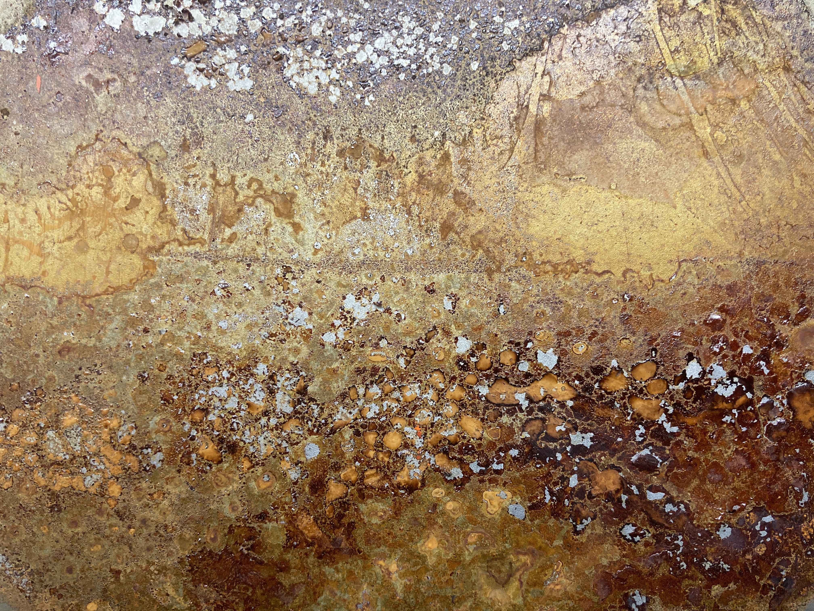
Who
Hi, ich bin Kristian. Ich bewege mich irgendwo zwischen Kunst, Metall und Code. Ich habe einen Hintergrund in Musiktechnologie, doch ich verbringe viel Zeit mit Schweißen und bauen in der Werkstatt. Kontaktiere mich gern für Kooperationen. Ich suche ständig nach Projekten, in denen sich meine beiden Welten, Handwerk und Technik, verbinden lassen.
Hi, my name is Kristian, a maker who lives somewhere between art, metal and coding. I have a background in music technology and practical expertise welding and building things. I enjoy making objects that (make you) move. Please contact me for collaborations, I am constantly looking for roles that will bring both of my worlds together.
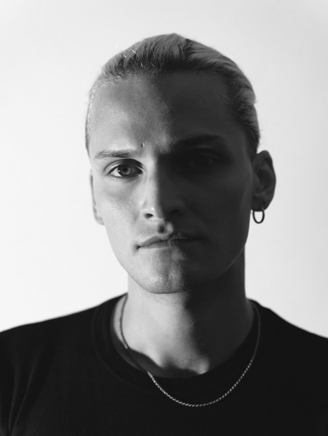
Dev
A more in-depth description of many of my projects can be found on my MCT
blog
page.
Screamscape(2024)
an interactive music system which is gesture controlled, designed to manipulate extreme
vocal effects live on stage. Uses motion capture to map hand movement to the timbre of
screams and growls. Built in Max/MSP with ESP32-based hardware and it's really about
bridging the gap between vocal technique and digital signal processing.
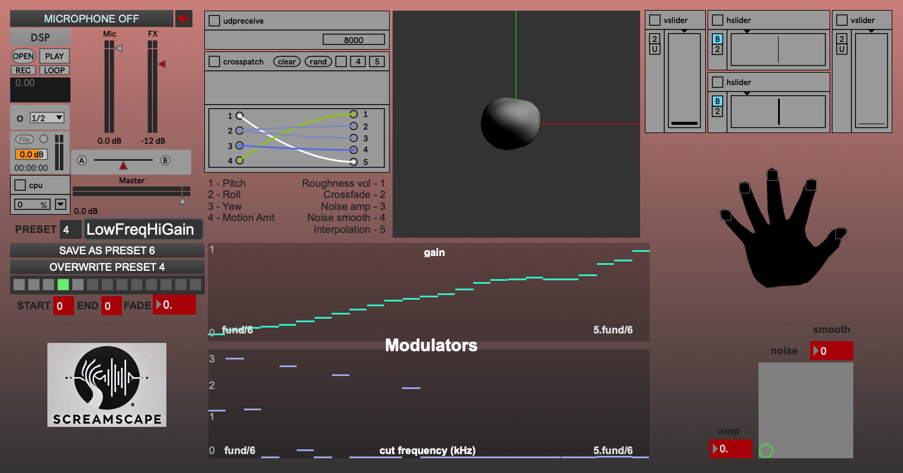
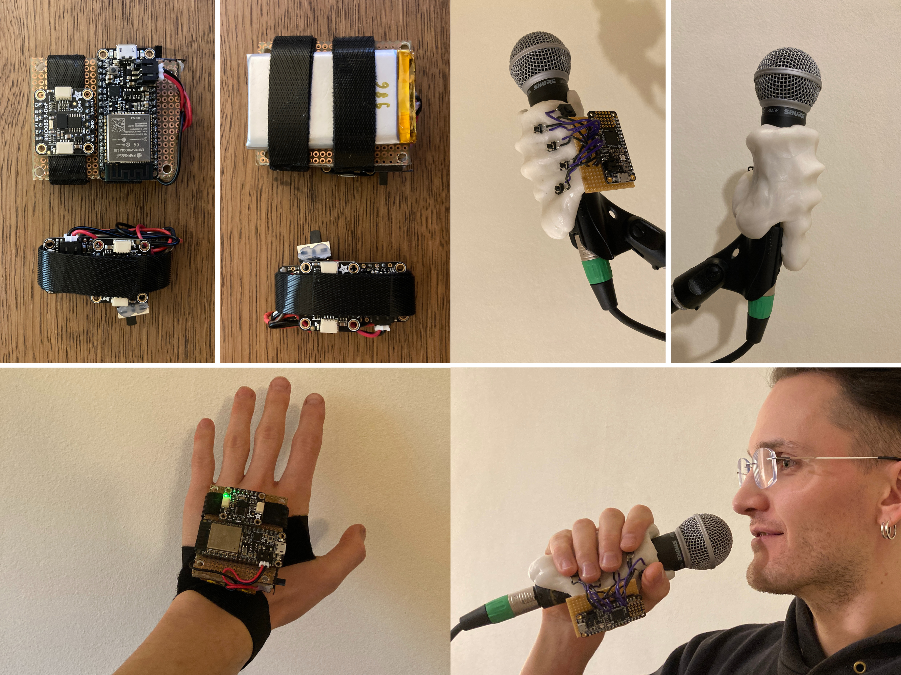
Xyborg 2.0 (2023)
a hand-based gesture-controlled music instrument built with capacitive touch sensors, accelerometers, and a Bela embedded system running Pure Data, enabling real-time, body-driven control of audio effects such as filter cutoff, distortion, and vibrato. Maps hand motion and position to sonic parameters. Inspired by Michel Waiswisz’ The Hands.
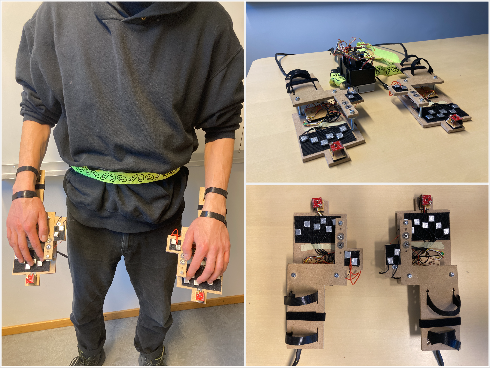
PD Cellular Automaton (2024)
Pure Data patch based on the idea of John Conway's Game of Life determining the structure of the music.
Endlager (2022)
live performance processed in Max/MSP, using a larynx microphone as the primary audio
source. Reflections on the lasting legacy of human-made structures like nuclear waste
storage. Poem is “Ozymandias” by Percy Bysshe Shelley.
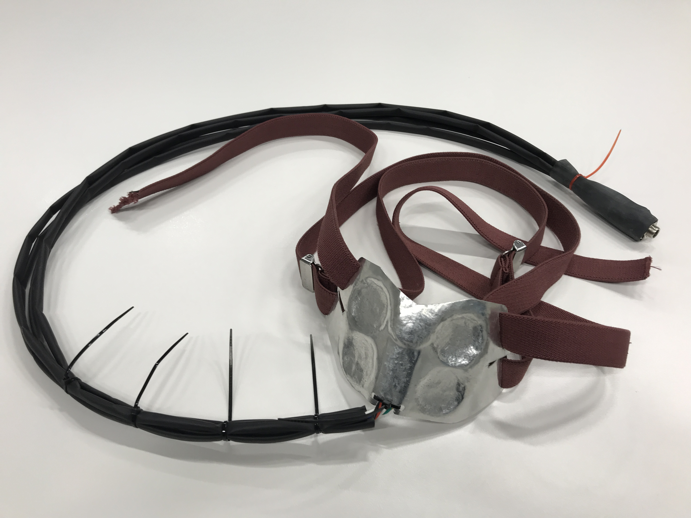
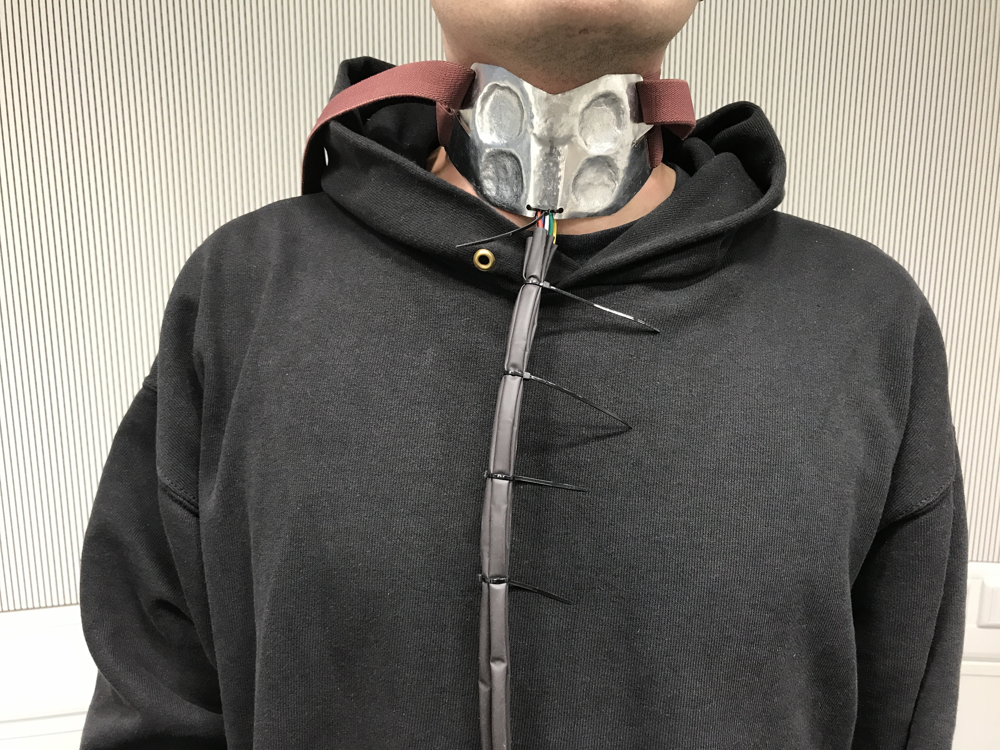
Wespe/Blüte(2022)
a reactive sound installation using live environmental recordings processed in Max/MSP, where frequency bands are routed to independent effect chains and additive synthesis modules Paired with Blüte, a plant-based haptic sound instrument using piezo pickups and Max-based synthesis.Metal
Working with sheet metal in an artistic style is a relatively new world for me, so not much
to see here until now. In the meantime, check out what I made so far.
Etchings (2026 -ongoing)
Test plates to find good parameters for photochemical etching (ferric chloride). Cold
blueing is applied as a last step to bring the motive out.
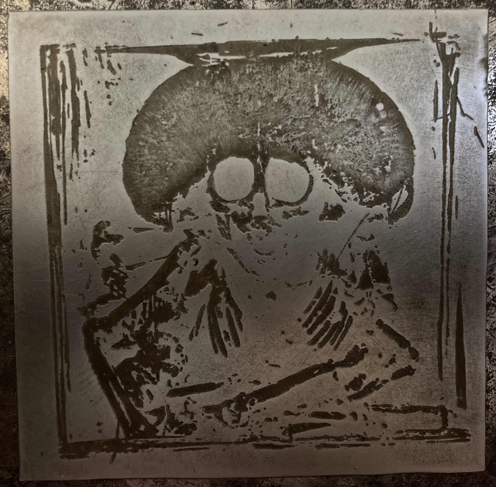
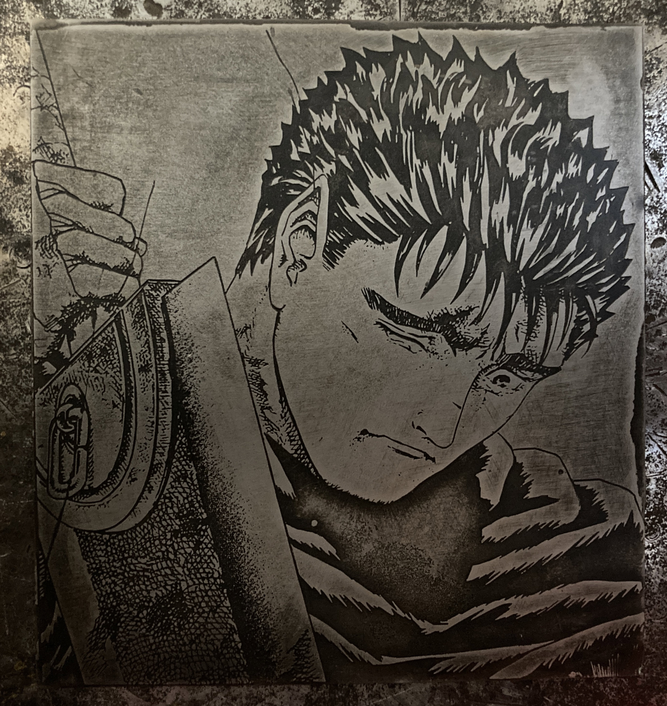
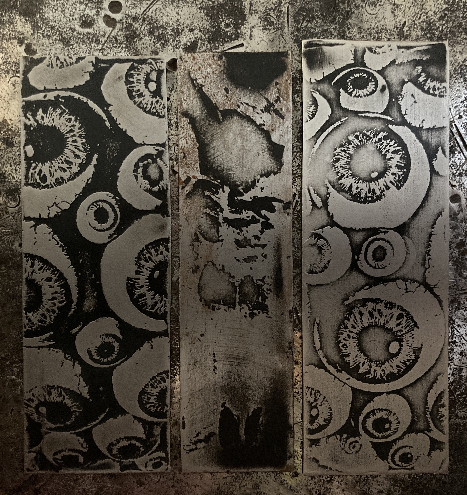
Beltgrinder (2026)
Welded from scratch in my workshop.
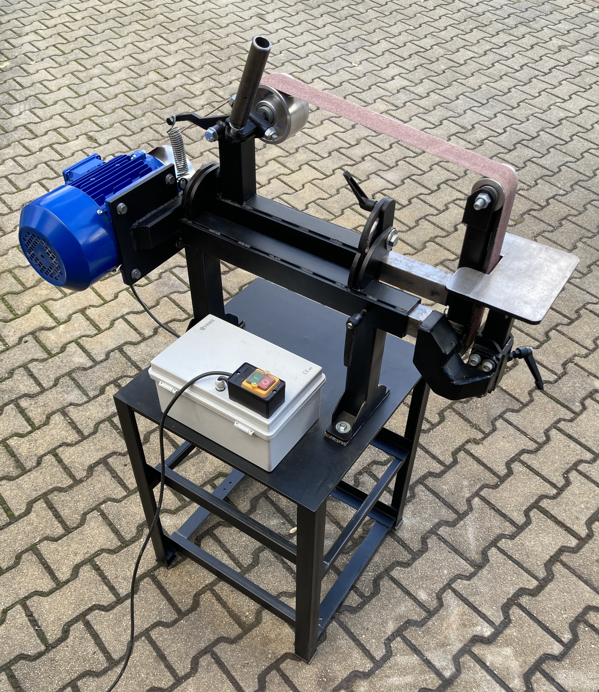
pubs
Publications
- (2024) Eicke, Kristian. "Screamscape: Gestural Vocal Manipulation Based on Sonic Properties of Extreme Vocal Effects".
- (2024) Eicke, Kristian, Stefano Fasciani, and Çağrı Erdem. "Xyborg: A Wearable Hand-based Instrument for Musical Expression." Proceedings of the International Conference on New Interfaces for Musical Expression.
- (2023) Baba, Aysima, Kristian Eicke, Jack Hardwick, Nino Jakeli, and Alexander Wastnidge. "MUZZIBALL APPLIED PROJECT REPORT.".
- (2022) Eicke, Kristian. "The Connection of Sound and Image in Alien".
Contact
I'm always open to collaboration and creative partnerships. I'd love to hear from you.
Email: misc-ekr@proton.me